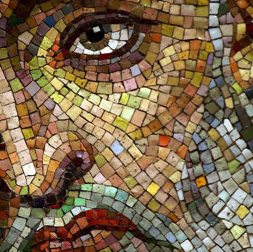

The history of Rome from the founding of the City
Roman women and their roles in ancient society
Roman emperors, their style of rule and their more intimate side
Vesuvius and its consequences for Pompeii and Herculaneum

Spartacus: his life as a slave, gladiator, and rebel
The Vestal Virgins: the order, their rituals, and politics